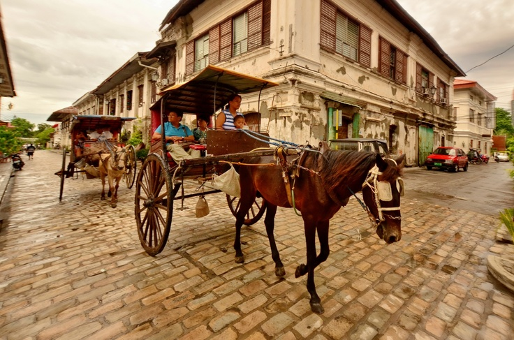
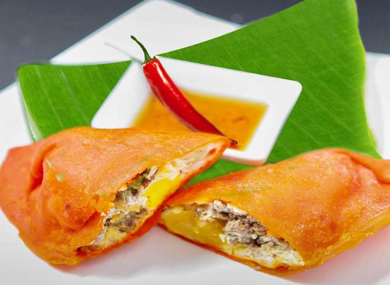
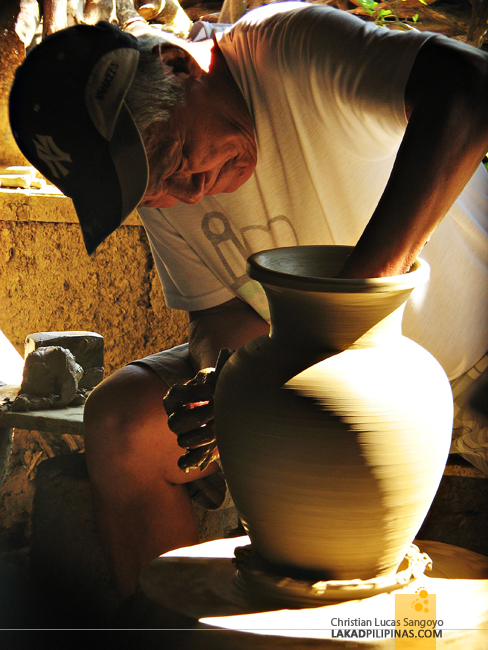

Exploring the Timeless Beauty of Vigan
Vigan is a city located on the northwestern coast of Luzon in the Philippines. It is the capital of the Ilocos Sur province and the only UNESCO World Heritage City in the country. Recently, it won as one of the New Seven Wonders Cities of the World. The main draw of Vigan City are its well-preserved Bahay na Bato structures located at the Meztizo District, its historical core. Currently, there are 187 listed ancestral houses in town. Besides this, it also boasts of beautiful colonial churches, a plaza that comes alive with a fountain show at night, a free-roaming zoo and numerous historical museums. The city’s cuisine is also quite interesting and numerous restaurants around the area makes it readily accessible to visitors.
Must-Try Activities in Vigan
Ride a Kalesa and Explore the Historic Streets
Calle Crisologo is Vigan’s most popular tourist attraction and is the highlight of a Vigan City tour. The grounds and pavements of this preserved street are made of cobblestones, and both sides are lined with ancestral houses that are reminiscent of old Spanish towns.
During the daytime, the street is a busy commercial district, with most shops selling quality antiques, furniture, and jewelry pieces. You can indulge in souvenir shopping, including native food products and delicacies, or snag world-class hand-woven clothing, blankets, and accessories at Rowilda’s Weaving.
You can ride a kalesa (horse-drawn carriage), which is the only vehicle plying Calle Crisologo. A kalesa ride lasts for about an hour and can take you around Calle Crisologo and the rest of the Vigan Heritage Village, including the Vigan Cathedral and Plaza Burgos.
At night, Calle Crisologo transforms into a lively dining strip, where people enjoy alfresco meals and drinks to end the day.
Visit the Bantay Bell Tower for a Panoramic View
The Bantay Bell Tower offers a breathtaking panoramic view of Vigan. Climb up the tower to appreciate its historic architecture and scenic surroundings.
Nothing else can give you the best view of Vigan than the Bantay Church Bell Tower. The belfry is situated on a hill overlooking the Bantay district in northeast Vigan.
You’ll need to climb a winding staircase to get to the top of the brick structure, where you’ll find an enormous bell hanging right in the middle of the tower.
The watchtower served as a good vantage point for the natives of Ilocos to see approaching enemies during the Spanish reign and World War II.
Today, people honor the memory of the tower by taking pictures at the foot of the hill, making it look as if they’re holding it dearly on the palm of their hands or forming a heart shape with their arms extended over the tower.
Joining a day trip to Vigan is a good idea if you want to explore other tourist spots as well.
Try Vigan’s Famous Special Empanada
Vigan is famous for its delicious Empanada. Don’t miss the chance to taste this iconic Ilocano delicacies while exploring the city.
Vigan’s empanada is a must-try when visiting the city. This crispy, golden-brown treat is filled with grated green papaya, Vigan longganisa, and a fresh egg, deep-fried to perfection.
The empanada is best enjoyed with sukang Iloko, a native vinegar that enhances its rich and savory flavors. It is a staple street food that locals and tourists alike love.
You can find this delicious snack in various stalls around Vigan, especially near Plaza Burgos, where you can watch vendors expertly prepare and fry each empanada right before your eyes.
Experience Pottery-Making at Pagburnayan
Visit Pagburnayan and try your hand at traditional pottery-making. See how skilled artisans mold clay into beautifully crafted jars and pots.
Getting down and dirty is part of visiting Vigan City. But get your minds off the gutter, I’m talking about getting literally dirty, like molding a clay, spinning it and creating something beautiful. Well, maybe not that last part, it takes a very skilled hand to achieve that.
Bigueños claim that these kinds of jars are much hardier than other terra cotta products found in the market. During colonial period, these are used for tea drinking, but now, it is regarded as an excellent container to ferment brown sugar, basi (sugarcane wine), sugarcane vinegar, and isdang bagoong (fish sauce). They went further, claiming that products fermented using a burnay jar actually tastes better.
Watch the Mesmerizing Dancing Fountain Show
End your Vigan trip with the enchanting Dancing Fountain Show at Plaza Salcedo. The spectacular lights and water display make for a magical experience.